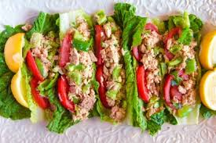

Tuna Salad Wrap

Description
Make tuna salad and then wrap it in lettuce. 10/10.
Ingredients
- tuna
- mayonnaise
- mustard
- cornichon pickles
- eggs
- celery
- onion
- head of lettuce
Directions
- Chop up celery, place in a bowl, and salt thoroughly. The salt will draw water out, making it easier to squeeze out the liquid later.
- Put tuna, mayonnaise, mustard, and your minced cornichon pickles in a large bowl, and mix.
- Boil some eggs, then slice them and add them to the mix.
- Squeeze as much water out of the celery as possible, then add to the mix.
- Mix well and eat with lettuce wraps.